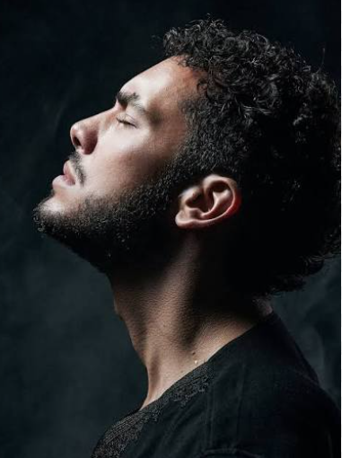
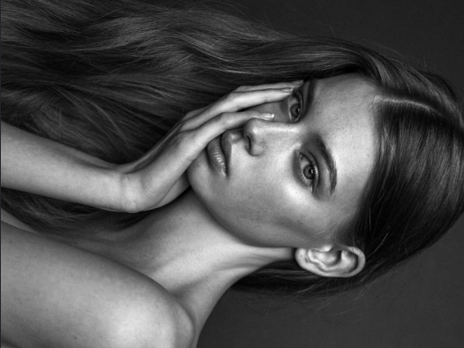
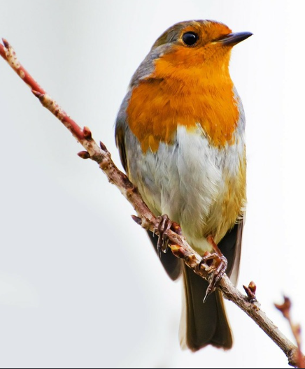
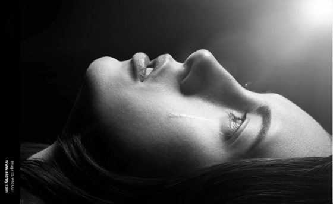
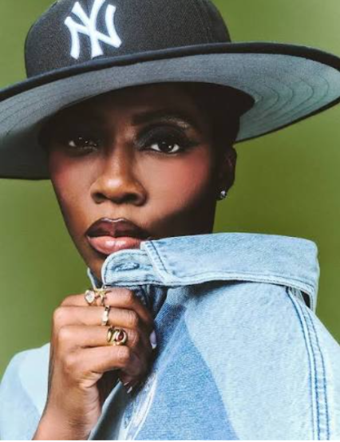

Charcoal on Paper. A technical study in extreme value transitions and high-contrast atmospheric lighting. This piece explores the delicate application of loose charcoal to create soft, seamless skin midtones, heavily juxtaposed against rich, velvety pure charcoal blacks defining the dense texture of curly hair, beard stubble, and structural facial contours.


Graphite and Blending Stump on Paper


Graphite with High-Contrast Studio Lighting

Graphite Shading with Natural Textures

Graphite and Blending Stump Portrait

Oil Pencil Blending on Paper

Oil Pencil on Paper, with a watercolour background

Graphite and Fine Shading with Conceptual Detail

Graphite and Sharp highlight on Paper, exploring high-contrast metallic and fluid textures

Graphite on Paper. A technical exploration of dual textures, volume and high contrast liquid droplets.

Circular coastal landscape study that captures a tranquil sunset and water reflections through graphite pencils and blending stumps.

Oil pencil on black paper. A technical study in high-contrast artificial light, balancing crisp metallic reflections against a soft, radioactive glow.

Graphite on paper. A surreal exploration of boundaries, depicting form dissolving into fluid motion as a hand melts into a quiet pool below.

An unblended mixed-media study of deep-ocean wildlife. Features a crisp oil pencil jellyfish and floating bubbles, set against a soft, faded watercolour halo and black paper background.

Graphite and Blending Stump on Paper. A focused, macro-realism study isolating the anatomy of the human eye. This piece emphasizes the glossy texture of the wet cornea through sharp, preserved white paper highlights, contrasted against dense graphite gradients to render the delicate folds of the eyelid and fine eyelash lines.


Oil Pencils on Paper. A reimagined, high-contrast character study translated from a monochrome reference. This piece features ultra-smooth skin transitions achieved through light, multi-layered oil pencil glazes, dramatically offset by bold ginger hair flow and emerald green eyes.

Oil Pencils on Paper. An exploration of complex ocular textures and radial color blending within the human iris. The drawing features rich, overlapping multi-tone gradients that mimic the intricate fibrous patterns of the eye, using the rich blending properties of oil-based cores.

Watercolour Pencils and Fineliner on Paper. An atmospheric exploration of geological form, depth, and environmental perspective. This landscape balances sharp, structured ink ridge lines with soft, fluidly dissolved watercolour pencil gradients to create a sense of massive scale.

Watercolour Pencils on Paper. A conceptual, surreal narrative study focusing on voyeurism and mystery. The piece features an emotionally expressive eye framed by layers of paper textures, utilizing the vibrant, water-activated pigments to build smooth skin dimensions.

Graphite on Paper. A stylized, meta-artistic layout mimicking the framing of a vintage Polaroid photograph. This piece uses careful graphite value adjustments inside the frame to contrast with the minimalist, clean white border, capturing a fleeting moment with classic pencil transitions.

Watercolour Pencils and Fineliner on Paper. A vivid, abstract color theory study examining the transitions of the visible light spectrum. This experimental piece focuses on pure saturation, activated with water to allow bright, bold hues to merge organically, all anchored by clean ink contours.


Watercolour Pencils on Paper. A wildlife study focused on organic textures and complex layered plumage. This drawing translates the soft fluffiness of a robin’s chest feathers through thousands of fine pencil strokes combined with rich, water-blended pigments for a vibrant wash of warm orange.


Graphite on Paper. An emotional, psychological portrait capturing raw human vulnerability and internal reflection. This study relies heavily on soft, velvety graphite shadows built with a traditional lead scale to communicate weight, grief, and quiet contemplation.

Watercolour Pencils and Fineliner on Paper. A classic still life study blending loose, fluid watercolor melts with crisp, structured architectural ink lines. This exercise explores the relationship between strict, rigid pen contours and unpredictable, water-activated pigments.


Oil Pencils and Fineliner on Paper. A dynamic celebrity portrait study capturing power, elegance, and stage lighting. This technical exploration focuses on the challenging angles of the facial planes, rendering strong highlights on the cheekbones using thick oil pencil layers framed by crisp fineliner profiles.